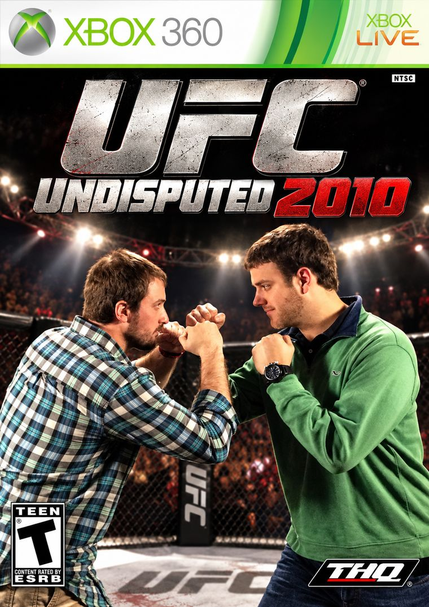

Ten fighters, one belt, and a champion the numbers say shouldn't be holding it.

T WOOD · 5-0VSTREY WILDER · 5-0
178.9POTTER · HIGHEST SCORE OF THE SEASON
723.2REX · MOST POINTS, BY 73.7
+14.0WOOD · LUCK SCORE, DOUBLE ANYBODY ELSE
Five weeks in and this league has a title picture that makes no sense. Two teams are 5-0. Neither of them is the best team in the league. Rex has 723.2 points, 73.7 more than anybody else, a 37-8 record against the field and an expected win percentage of 82.22, and he is sitting at 4-1 looking up at two guys who have been getting hit all year and not feeling it.
Underneath that, Potter just put up 178.9, the highest score anybody has managed this season, and he's 3-2. Waivers has more points than two teams with better records. Clod has had 636.1 points thrown at him, the most in the league, and the defending champion is 1-4. And Shain is 0-5 with the longest losing streak in the league after scoring 105.2 and losing by 7.5.
I wanted to do a category that tied the top four in the standings together and could not think of a better one than the game we spent many late nights playing on the couch at Lewis St. This week's theme is the heavyweight division off UFC Undisputed 2010. Let's set the mood: Wood's swiveling his ass off, Potter's complaining that nobody will stand and bang with him, and Rex just tried to throw the ottoman through the window.
Ten fighters, one belt, and a rankings page that does not match what anybody watching can see.
01 / THE CARD
Week 5 results
Winner
Pts
Loser
Pts
Margin
Mark Potter
178.9
Cody Clodfelter
127.0
51.9
Josh Hudson
159.2
Ian Baro
94.3
64.9
Taylor Hardee
141.7
Lee Galt
86.4
55.3
Trey Wilder
128.0
Michael Waivers
92.4
35.6
T Wood
112.7
Shain Collins
105.2
7.5
02 / THE RANKINGS
Power rankings after Week 5
Rk
Manager
Record
PF
PA
Power
All-play
XP win
Luck
Chg
1
T Wood
5-0
581.7
471.4
90.2
24-21
53.3%
+14.0
–
2
Taylor Hardee
4-1
723.2
484.7
85.8
37-8
82.2%
0.0
▲1
3
Trey Wilder
5-0
564.4
434.7
85.1
26-19
57.8%
+4.2
▼1
4
Mark Potter
3-2
649.5
582.2
81.8
32-13
71.1%
-2.9
–
5
Josh Hudson
2-3
569.9
607.5
65.1
23-22
51.1%
0.0
▲3
6
Lee Galt
2-3
519.1
590.0
58.9
20-25
44.4%
-5.6
▼1
7
Ian Baro
2-3
466.9
542.7
52.7
14-31
31.1%
+6.9
▼1
8
Michael Waivers
1-4
540.7
590.7
52.5
22-23
48.9%
-5.1
▼1
9
Cody Clodfelter
1-4
474.7
636.1
45.6
13-32
28.9%
-7.1
–
10
Shain Collins
0-5
470.5
620.6
35.8
14-31
31.1%
-6.9
–
03 / TALE OF THE TAPE
The division, ranked
1
Wood
Brock Lesnar
5-0 · Power 90.2 · 581.7 PF · Luck +14.0
Brock Lesnar was the kind of fighter who could make an entire division hate him simply by continuing to win, and Wood has apparently adopted the same strategy. His latest escape came against winless Shain, surviving 112.7-105.2 thanks largely to JGJahmyr Gibbs, who rushed for 151 yards and two touchdowns while adding five catches for 56 yards. Gibbs accounted for 35.2 fantasy points, nearly a third of Wood's offense, and the timing couldn't be worse because Detroit is on its bye in Week 6. Wood also spent $16 FAAB on JMJoe Mixon, only for Mixon to reportedly fail his physical and remain unsigned by an NFL team, leaving Wood with nothing to show for the investment.
Now comes the biggest matchup of the season against fellow undefeated Trey, who holds a 21-5 all-time advantage over Wood and has won their last five meetings. Wood's +14.0 luck score is more than double anybody else's, but even Brock Lesnar might have trouble surviving this one without his best weapon.
Five wins. No Gibbs. $16 down the drain.
2
Rex
Cain Velasquez
4-1 · Power 85.8 · 723.2 PF · Expected Win 82.2%
723.2 points through five games, the highest-scoring start in seventeen seasons of Greenville Natives football, breaking Potter's 2011 record by 42.2 points. Like Cain Velasquez relentlessly mauling opponents against the cage, Rex has been wearing down the entire division, but his greatest accomplishment this week might have been discovering that Shain's trash makes excellent fantasy football players. Shain dropped DMDrake Maye to add Jaylen Wright, and Rex promptly scooped Maye up from free agency.
Maye immediately rewarded him with 374 passing yards, four passing touchdowns, 25 rushing yards, and another touchdown, producing a league-leading 39.3 fantasy points. CWChristian Watson added six catches for 143 yards and two touchdowns, while BBBrock Bowers returned from injury and has looked more like a first-round pick than a third-round pick, where Rex took him. Rex is averaging 144.6 points per game with an 82.2% expected winning percentage, while Shain is sitting at 0-5 watching his former quarterback throw five touchdowns for somebody else.
One man's trash is apparently Rex's QB1.
3
Trey
Frank Mir
5-0 · Power 85.1 · 434.7 PA · Fewest Points Against
Frank Mir wasn't the biggest or strongest heavyweight in the division, but he was perfectly comfortable waiting for somebody to make a mistake before locking in a submission. My team has spent five weeks employing essentially the same strategy, winning every matchup without ever scoring more than 128 points. This week JDJayden Daniels threw for 260 yards and two touchdowns while rushing for another 70, helping secure a 128.0-92.4 win over Waivers.
I've allowed just 434.7 points through five games, the fewest in the league, and there's no denying I've benefited from opponents repeatedly leaving themselves wide open. But nobody asks how pretty the submission looked once the referee raises your hand. Now comes a rematch of one of the UFC's most famous heavyweight rivalries, Brock Lesnar versus Frank Mir, with both Wood and me undefeated and a chance to become just the third team in league history to start 6-0.
No highlight reel. Five submissions.
4
Potter
Junior dos Santos
3-2 · Power 81.8 · 649.5 PF · Highest Score of 2026
Potter didn't just beat Clod on Sunday; he delivered 178.9 points, the fifth-highest regular-season score in league history, and did it without a single starter exceeding 31 fantasy points. Like Junior dos Santos picking an opponent apart with combination after combination, Potter attacked Clod from every possible angle. BIBucky Irving rushed for 165 yards and a touchdown while adding another receiving score, PNPuka Nacua caught an absurd 17 passes for 138 yards and a touchdown, and JBJoe Burrow threw four touchdowns. Even the kicker joined the beating, as Spencer Shrader rewarded Potter's $2 FAAB investment with 21 fantasy points.
Eight starters finished in double figures, leaving Clod's respectable 127-point performance looking completely irrelevant. Potter now owns two of the ten highest-scoring weeks in league history, including his 225.4-point explosion in 2014, and Sunday's performance should remind everybody why nobody wants to stand and bang with Junior dos Santos.
178.9 points. Fifth all-time. Clod never stood a chance.
5
Hud
Shane Carwin
2-3 · Power 65.1 ▲3 · 159.2 Week 5
Shane Carwin built his reputation on frightening knockout power, and after four relatively uninspiring weeks, Hud finally decided to start throwing punches. JWJaylen Warren delivered the biggest haymakers, rushing for 101 yards and a touchdown while catching six passes for 87 yards and another score, with touchdowns covering 50 and 80 yards. MEMike Evans added seven catches for 113 yards and a touchdown, Jason Myers kicked five field goals, and the Jets defense contributed 16 points. Hud demolished Ian 159.2-94.3, producing the week's largest margin of victory despite leaving Isaiah Likely's 26.9 points on the bench.
But at 2-3, Hud isn't nearly as far from the basement as this week's knockout performance might suggest. He now faces Potter, who has won 17 of their 22 meetings, including nine consecutive victories at one point, and a loss would put Hud right back in Caddy Bowl territory. Just like Carwin's famous fight against Brock Lesnar, Hud proved he can deliver a devastating first-round beating, but the question is whether he can keep it going when the fight gets tougher.
One big knockout doesn't guarantee you won't end up carrying somebody else's golf bag.
6
Lee
Roy Nelson
2-3 · Power 58.9 · 519.1 PF
There was only one appropriate fighter for Lee Galt because Lee and Roy Nelson both proudly rock the mullet. Big Country made a career out of looking completely unconcerned with conventional athletic appearances before occasionally knocking somebody unconscious with a massive overhand right, which feels appropriate for a team that has finished last in weekly scoring twice already. Lee managed just 86.4 against Rex, with BPBrock Purdy throwing for 189 yards and two touchdowns but failing to provide enough offense to keep things competitive. At least the quarterback position is settled, as Purdy has become Lee's established starter since being acquired for $10 FAAB. Lee also spent $14 on Devaughn Vele, continuing to search for receiving help and presumably somebody capable of landing Roy Nelson's famous right hand.
Now he faces Shain in a matchup between the league's last two caddies, with Lee attempting to avoid becoming a repeat offender after his 2026 Caddy Bowl punishment. The playoffs are still within reach, but after spending time carrying another man's golf clubs, Lee should understand better than anybody that there's more than one reason to avoid the bottom of the standings.
Big Country. Big mullet. No interest in carrying another golf bag.
7
Ian
Cheick Kongo
2-3 · Power 52.7 · 466.9 PF
There was one night at Lewis Street when I was playing Rex in UFC Undisputed 2010 and somehow ended up with Cheick Kongo. I was devastated, had absolutely no confidence in Kongo, and had practically accepted defeat before the fight even started. Then Ian started giving me a pep talk, and whatever he said had me ready to run through a brick wall. About a minute later, Rex was unconscious from a first-round knockout, and Cheick Kongo looked like the greatest heavyweight who had ever lived. That's Ian.
His fantasy team might be 2-3 and dead last in points scored, but I've personally witnessed this man turn a hopeless situation into a first-round knockout with nothing more than a motivational speech. His latest moves haven't exactly inspired confidence, as the $10 he spent on T.J. Hockenson produced one catch for seven yards, while his decisions to roster JJJosh Jacobs and THTyreek Hill remain legitimate headscratchers. But they're lottery tickets, and if there's one locker room where a couple of questionable veterans might somehow revive their fantasy careers, it's Ian's. Hud knocked him around for a 64.9-point defeat this week, and while Ian remains within striking distance of the playoffs, his league-low scoring total has also put him dangerously close to Caddy Bowl territory. If anyone can coach a struggling heavyweight out of the basement and away from a future afternoon carrying someone else's golf clubs, it's the man who once convinced me Cheick Kongo could knock out Rex.
The record says 2-3. The corner man says the fight isn't over.
8
Waivers
Brendan Schaub
1-4 · Power 52.5 · 540.7 PF
Yesterday, Waivers saw Brendan Schaub at a grocery store in Raleigh. Waivers told him how cool it was to meet him in person, but explained that he didn't want to be a douche and bother him by asking for pictures or anything. Schaub responded, "Oh, like you're doing now?" Waivers was taken aback, and all he could manage was a confused "Huh?" before Schaub started cutting him off, repeatedly saying "huh? huh? huh?" while closing his hand in front of Waivers' face. Eventually, Waivers walked away and continued shopping, hearing Schaub chuckling behind him.
A few minutes later, Waivers arrived at the front of the store and saw Schaub attempting to walk out with approximately fifteen Milky Ways without paying. The cashier politely stopped him and explained that he needed to pay for the candy bars. Schaub initially pretended to be tired and unable to hear her, but eventually returned to the counter. When the cashier picked up one Milky Way and started scanning it multiple times, Schaub demanded that she scan each bar individually to prevent any "electrical infetterence," then turned around and winked at Waivers. Waivers was fairly certain that wasn't even a word. As the cashier finished scanning the bars and began reading the total, Schaub repeatedly interrupted her by yawning as loudly as humanly possible.
Anyway, Waivers lost again Sunday. Like Brendan Schaub, Waivers looks perfectly capable of competing in the heavyweight division, but things have a habit of going horribly wrong once the fight starts. JAJosh Allen rushed for 121 yards while adding 210 passing yards, and GWGarrett Wilson caught seven passes for 104 yards and a touchdown, but Waivers still managed just 92.4 points against Trey. The real disaster was CLCeeDee Lamb, who caught two passes for nine yards, meaning Schaub allegedly carried more Milky Ways out of that grocery store than Lamb gained receiving yards. Waivers has enough talent to compete for a playoff spot, but at 1-4, he's getting dangerously close to fighting for something considerably less glamorous. He now faces Clod, who has beaten him five consecutive times, and another loss would leave Waivers staring directly at the possibility of a Caddy Bowl appearance. Schaub famously knocked Mirko Cro Cop unconscious in 2011, so perhaps Waivers can finally land a punch before his season turns into eighteen holes of carrying somebody else's clubs.
To prevent any electrical infetterence, please scan each loss individually.
9
Clod
Mirko Cro Cop
1-4 · Power 45.6 · 636.1 PA
There was a time when Mirko Cro Cop was one of the most terrifying men in mixed martial arts, and Clod was similarly feared throughout the Greenville Natives after winning last year's championship. Five weeks into his title defense, however, he's 1-4 and has allowed 636.1 points, more than anybody else in the league. Sunday was particularly cruel, as JGJared Goff contributed 28.9 points and MNMalik Nabers added 23.6, helping Clod reach a respectable 127.0, only for Potter to drop the fifth-highest score in league history on him.
Like Cro Cop in the later stages of his UFC career, Clod hasn't completely forgotten how to fight, but he keeps finding himself on the wrong side of somebody else's highlight reel. He's been trying to repair the damage, including spending $24 FAAB on OGOllie Gordon II, but the results haven't followed. Clod knows all about the Caddy Bowl after earning the inaugural caddy punishment in 2024, and the defending champion now faces the very real possibility of returning to the competition he thought he'd left behind. Fortunately, he faces Waivers in Week 6, a manager he's defeated five consecutive times, giving him a chance to revive his playoff hopes while avoiding another trip to the golf course.
Right leg hospital. Left leg cemetery. Please, not another golf bag.
10
Shain
Stefan Struve
0-5 · Power 35.8 · 470.5 PF
Six-foot-four, plenty of reach, and somehow every punch still finds the chin. Like Stefan Struve, Shain has all the physical tools to look intimidating when he steps into the octagon, but things tend to unravel the moment somebody starts swinging. Shain finally got some legitimate production Sunday, with MSMatthew Stafford completing 40 of 54 passes for 383 yards and three touchdowns, while PWParker Washington added six catches for 124 yards and two scores. Unfortunately, Wood escaped with a 112.7-105.2 victory, handing Shain his fifth consecutive loss.
The week's biggest embarrassment might have been watching DMDrake Maye, whom Shain dropped to acquire Jaylen Wright, throw four touchdowns and rush for another after Rex picked him up from free agency. Shain now enters Week 6 against Lee in a matchup between the league's last two caddies, with Shain having earned the punishment in 2025 and Lee following in 2026. At 0-5, Shain isn't just watching his playoff hopes disappear; he's in serious danger of making a return trip to the Caddy Bowl, where another loss could leave him carrying golf clubs for the second time.
Six-foot-four. Zero wins. One quarterback charity. A potential second career as a caddy.
04 / THE BONUSES
Week 5 awards
Knockout of the NightBiggest blowout, Hud over Ian by64.9
Fight of the NightClosest game, Wood over Shain by7.5
Performance of the NightHighest score, Potter over Clod178.9
Point DeductionWorst starter, Bears D/ST (Ian)-2.0
Left It in the CornerBest bench score, Isaiah Likely (Hud)26.9
Hometown DecisionLuckiest team on the season, Wood+14.0
Robbed on the CardsUnluckiest team on the season, Clod-7.1
Most Damage AbsorbedMost points against, Clod636.1
Still UndefeatedWood and Trey, five fights, no losses5-0
05 / THE MAIN CARD
All-league lineup, Week 5
Pos
Player
Manager
Pts
QB
DMDrake Maye
Taylor Hardee
39.3
RB
JGJahmyr Gibbs
T Wood
35.2
RB
JWJaylen Warren
Josh Hudson
33.8
WR
CWChristian Watson
Taylor Hardee
29.3
WR
PNPuka Nacua
Mark Potter
29.2
Flex
BIBucky Irving
Mark Potter
30.5
TE
BBBrock Bowers
Taylor Hardee
19.0
D/ST
Jets
Josh Hudson
16.0
K
Jason Myers
Josh Hudson
23.0
06 / LIONS & LAMBS
Season to date
723.2Most points for · Taylor Hardee
466.9Fewest points for · Ian Baro
636.1Most points against · Cody Clodfelter
434.7Fewest points against · Trey Wilder
178.9Highest ceiling · Mark Potter
58.8Lowest floor · Cody Clodfelter
144.6Highest average week · Taylor Hardee
93.4Lowest average week · Ian Baro
07 / THE RECORD BOOK
Most points through five weeks, all time
Rex didn't just lead the league this year. He has the best five-week start anybody has ever had.
#
Year
Team
Points
1
2026
Taylor Hardee
723.2
2
2011
Mark Potter
681.0
3
2011
Michael Waivers
677.0
4
2015
Shain Collins
671.0
5
2013
Shain Collins
664.8
6
2022
Michael Waivers
656.1
7
2021
Lee Galt
654.7
8
2026
Mark Potter
649.5
9
2013
T Wood
646.6
10
2019
Taylor Hardee
646.2
Rex beat the fifteen-year-old record by 42.2 points and he is 4-1. Potter's 649.5 knocked Trey Wilder's 2017 (645.3) and Shain Collins' 2021 (644.3) off the list entirely. Two of the ten best starts in league history are happening right now, and neither one of those guys is in first place.
08 / THE RECORD BOOK
Top 10 single-game scores, regular season
Potter's 178.9 didn't just win him the week. It's the fifth highest score in league history.
#
Points
Team
Year / Week
Opponent
Result
1
227.9
Shain Collins
2015 wk3
Cody Clodfelter
W
2
225.4
Mark Potter
2014 wk8
Lee Galt
W
3
190.1
Shain Collins
2021 wk5
Lee Galt
W
4
179.7
Shain Collins
2013 wk4
Trey Wilder
W
5
178.9
Mark Potter
2026 wk5
Cody Clodfelter
W
6
178.3
T Wood
2018 wk6
Josh Hudson
W
7
176.6
Ian Baro
2023 wk3
Lee Galt
W
8
176.3
Josh Hudson
2024 wk11
Ian Baro
W
9
175.0
Taylor Hardee
2025 wk6
Mark Potter
W
10
174.0
Trey Wilder
2021 wk5
Mark Potter
W
Potter now owns two of the ten biggest weeks in league history, and both came against somebody who didn't do anything wrong: Lee in 2014, and Clod last week, whose 127.0 would have beaten five of the ten teams in this league. Shain owns three of the top four, including the all-time record, which is its own kind of cruel for a man sitting at 0-5.
09 / THE RECORD BOOK
All-time head-to-head win streaks
#
Streak
Matchup
Span
1
10
Trey Wilder over T Wood
2009 wk6 → 2015 wk5
2
9
Mark Potter over Josh Hudson
2014 wk4 → 2021 wk8
3
8
Ian Baro over Mark Potter
2017 wk9 → 2023 wk10
3
8
Josh Hudson over Shain Collins
2021 wk12 → 2025 wk11
5
7
Trey Wilder over Mark Potter
2016 wk8 → 2020 wk1
6
6
Ian Baro over Cody Clodfelter
2019 wk4 → 2023 wk5
6
6
Ian Baro over Trey Wilder
2019 wk6 → 2024 wk7
6
6
Lee Galt over Josh Hudson
2021 wk4 → 2024 wk2
6
6
Shain Collins over Mark Potter
2021 wk13 → 2025 wk9
6
6
Trey Wilder over Shain Collins
2009 wk9 → 2012 wk10
Active streaks through Week 5
#
Streak
Matchup
Most recent
1
8
Josh Hudson over Shain Collins
2025 wk11
2
5
Cody Clodfelter over Michael Waivers
2026 wk4
2
5
Mark Potter over Ian Baro
2025 wk10
2
5
Ian Baro over Shain Collins
2026 wk2
2
5
Trey Wilder over T Wood
2025 wk11
6
4
Michael Waivers over Josh Johnston
2013 wk10
6
4
Trey Wilder over Lee Galt
2026 wk2
6
4
Shain Collins over Mark Lindsay
2010 wk9
6
4
Michael Waivers over Shain Collins
2026 wk3
6
4
Taylor Hardee over Michael Waivers
2025 wk12
Shain Collins appears on the wrong end of this list three times, which is what an 0-5 season looks like from the inside. Clod has beaten Waivers five straight and they're matched up again this week, so one of those two walks out of Sunday feeling slightly better about a 1-4 season. And the longest streak in league history is still mine over Wood, ten straight from 2009 to 2015. We're both 5-0. I'm currently on five in a row against him. We have not played yet.
10 / NEXT UP
Week 6 matchup previews
Head-to-head history, matchup marks and position comparison for all five Week 6 games.
57.3All-time Week 6 low score · Ian Baro
5-0 vs 5-0Wood and Trey meet for the first time this season
2Teams that have ever started 6-0 · Potter 2014, Waivers 2022
0Teams that have ever started 7-0 in league history
In seventeen seasons exactly two teams have started 6-0: Mark Potter in 2014 and Michael Waivers in 2022. Nobody has ever started 7-0. Wood and I are both 5-0 and we play each other Sunday, so one of us joins that list and the other one doesn't, and whoever wins gets a crack at a record this league has never seen.
Matchup marks, defined
Buzzer Beater
Win or loss by less than 1
Nail Biter
Win or loss by more than 1, less than 5
Dunked On
Win or loss by more than 20
Blow Out
Win or loss by more than 40
Slug Fest
Combined score over 250
Pillow Fight
Combined score under 180
Cody Clodfelter9th · 1-4 · PF 474.7 · PA 636.1
VS
Ian Baro7th · 2-3 · PF 466.9 · PA 542.7
The 1-4 and the 2-3, and the two lowest-scoring teams in the league. Ian owns it 12-6 and has 196.6 more points in the series.
Head-to-head · the history
(6-12)Overall Record(12-6)
33%Winning %67%
(6-11)Regular Season Record(11-6)
(0-1)Playoff Record(1-0)
1844.7Points Scored2041.3
155.3High Score171.1
49.4Low Score83.9
102.5PPG113.4
96.9Regular Season PPG105.4
197.6Playoff PPG249.2
1Current Winning Streak0
3Longest Winning Streak6
Matchup marks · the margins
0Buzzer Beater0
0Nail Biter2
2Dunked On3
1Blow Out4
1Slug Fest0
1Pillow Fight3
-196.6Point Dif196.6
19.3Max Point Dif40.9
Position comparison
BNBo Nix 19.3QB40.9 Aaron RodgersAR
NHNajee Harris 35.5RB79.5 Jonathan TaylorJT
JSJaxon SmithNjigba 51.2WR64.9 Mike EvansME
Emanuel Wilson 25.5TE42.5 George KittleGK
Michael Waivers8th · 1-4 · PF 540.7 · PA 590.7
VS
Taylor Hardee2nd · 4-1 · PF 723.2 · PA 484.7
The tightest series on the board: Rex leads the points by 14.0 over eighteen years, and Waivers still leads it 15-11. Rex has won the last three.
Head-to-head · the history
(15-11)Overall Record(11-15)
58%Winning %42%
(14-10)Regular Season Record(10-14)
(1-1)Playoff Record(1-1)
3034.3Points Scored3048.3
135.6High Score132
71.8Low Score59.7
116.7PPG117.2
106.7Regular Season PPG107.7
237.3Playoff PPG231.9
0Current Winning Streak3
5Longest Winning Streak3
Matchup marks · the margins
2Buzzer Beater1
1Nail Biter0
3Dunked On5
0Blow Out1
3Slug Fest0
4Pillow Fight1
-14.0Point Dif14.0
53.1Max Point Dif63.8
Position comparison
JAJosh Allen 53.1QB63.8 Josh AllenJA
CMChristian McCaffrey 71.2RB59.2 Bijan RobinsonBR
CLCeeDee Lamb 41.0WR40.4 George PickensGP
RGRob Gronkowski 23.3TE23.1 Nick ChubbNC
Lee Galt6th · 2-3 · PF 519.1 · PA 590.0
VS
Shain Collins10th · 0-5 · PF 470.5 · PA 620.6
Lee leads 14-10, but the biggest single score in this matchup belongs to Shain: 190.1, which is also the third highest score in league history. He's 0-5.
Head-to-head · the history
(14-10)Overall Record(10-14)
58%Winning %42%
(14-9)Regular Season Record(9-14)
(0-1)Playoff Record(1-0)
2772.5Points Scored2670.8
154.5High Score190.1
58.5Low Score64.6
115.5PPG111.3
112.4Regular Season PPG106.1
187.1Playoff PPG231.3
0Current Winning Streak1
4Longest Winning Streak3
Matchup marks · the margins
0Buzzer Beater1
0Nail Biter1
3Dunked On2
2Blow Out2
2Slug Fest0
1Pillow Fight2
101.7Point Dif-101.7
71.6Max Point Dif60.9
Position comparison
PMPatrick Mahomes 52.8QB62.2 Lamar JacksonLJ
NCNick Chubb 85.6RB63.5 Derrick HenryDH
WFWill Fuller V 45.5WR49.4 Keenan AllenKA
TWTyler Warren 25.5TE36.2 Mark AndrewsMA
Josh Hudson5th · 2-3 · PF 569.9 · PA 607.5
VS
Mark Potter4th · 3-2 · PF 649.5 · PA 582.2
Potter owns Hud 17-5 with a +261.4 point differential, and his nine-game run in this series is the second longest streak in league history.
Head-to-head · the history
(5-17)Overall Record(17-5)
23%Winning %77%
(5-16)Regular Season Record(16-5)
(0-1)Playoff Record(1-0)
2238.1Points Scored2499.5
127.9High Score152.5
74.2Low Score66.4
101.7PPG113.6
96.9Regular Season PPG108.1
203.2Playoff PPG229.8
0Current Winning Streak1
3Longest Winning Streak9
Matchup marks · the margins
0Buzzer Beater0
0Nail Biter4
1Dunked On4
2Blow Out4
0Slug Fest0
0Pillow Fight2
-261.4Point Dif261.4
59.4Max Point Dif78.3
Position comparison
JHJustin Herbert 42.5QB47.5 Dak PrescottDP
CMChristian McCaffrey 28.9RB90.2 Derrick HenryDH
ABAmonRa St Brown 120.8WR37.6 Cooper KuppCK
TKTravis Kelce 13.7TE25.2 Trey McBrideTM
T Wood1st · 5-0 · PF 581.7 · PA 471.4
VS
Trey Wilder3rd · 5-0 · PF 564.4 · PA 434.7
Both 5-0, and only two teams in league history have ever started 6-0. I lead this series 21-5 with a +643.3 point differential, the widest in the league, and the ten-game run in it is the longest streak this league has ever seen.
Head-to-head · the history
(5-21)Overall Record(21-5)
19%Winning %81%
(5-19)Regular Season Record(19-5)
(0-2)Playoff Record(2-0)
2759.2Points Scored3402.5
154.7High Score165
76.0Low Score71.7
106.1PPG130.9
101.9Regular Season PPG122.6
157.2Playoff PPG230.5
0Current Winning Streak4
2Longest Winning Streak10
Matchup marks · the margins
0Buzzer Beater0
2Nail Biter1
2Dunked On7
1Blow Out5
0Slug Fest0
0Pillow Fight1
-643.3Point Dif643.3
83Max Point Dif89.0
Position comparison
PMPatrick Mahomes 96.2QB91.8 Josh AllenJA
JGJahmyr Gibbs 58.2RB65.7 Saquon BarkleySB
TMTetairoa McMillan 42.0WR54.1 CeeDee LambCL
DWDarren Waller 25.9TE28.1 Darren WallerDW
Two undefeated fighters, and neither one is the best man in the division. — Trey